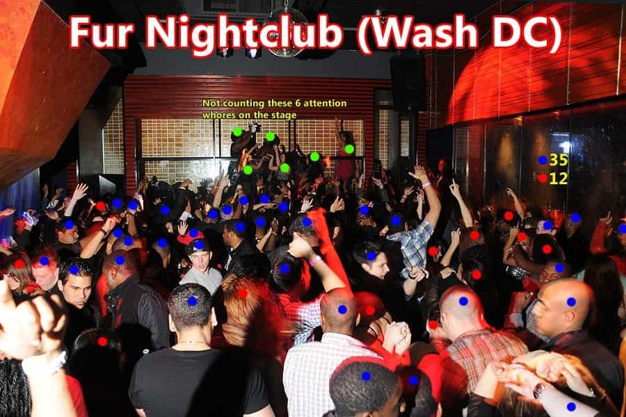
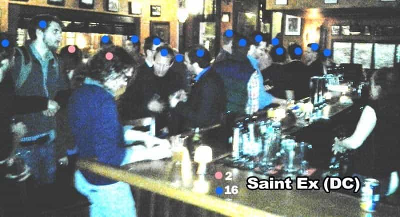
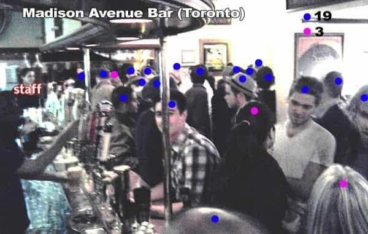
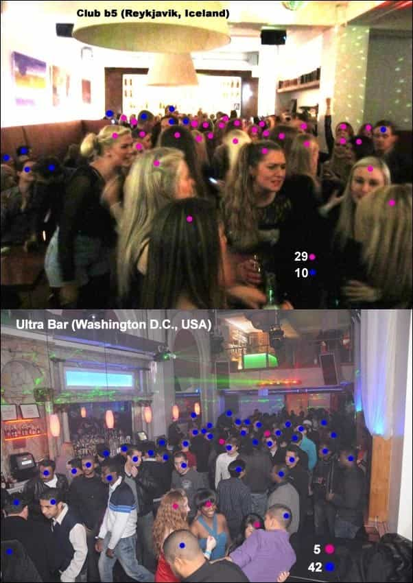

Daryush "Roosh" Valizadeh created ROK in October 2012. You can visit his blog at RooshV.com or follow him on Twitter and Facebook.


In the golden area of modern pickup (around 2000-2005), a little night game was all you needed to consistently meet cute American girls in bars and clubs. It had its flaws, but just knowing how to approach with a little confidence and dancing skill would be enough to get laid. You didn’t have to use the internet. Day game was nothing more than a niche for guys who didn’t drink. Flaking was a low level annoyance instead of a common outcome, and you didn’t have to aim for a one-night stand because chances were reasonable that a girl would show up on a first date.
My recent experiences in Washington DC, Montreal, Toronto, and New York City clearly showed me how much night game has declined.
1. Lopsided sex ratio that hovers around 3 guys for every 1 girl. If you’re lucky, you’ll see brief flashes of 1.5 guys per girl.
2. Almost no top talent unless you go to the snobbiest clubs in town where table service or promoter connections are a requirement to get the attention of above-average talent.
3. Decreasing level of thirst in women because their option pipeline is near capacity.
4. Having to compete with a woman’s iPhone.
5. An increase in group size with the presence of beta orbiters who purchase drinks and thus lock in the girls for the night.
6. A hostility to “random” men who are not pre-screened via social circle or a swipe of destiny on Tinder.
7. An unreasonable expectation from girls on how perfect your conversation must be when approaching. If you don’t completely capture her attention within the first minute, you’re out.
8. An increase in women putting down men to elevate their egos. Women always rejected men, but now they are trying to emotionally hurt you with nasty attitudes and cheap insults, leading to sour interactions that kill your mood.
9. An increase in bartenders and bar employees cockblocking your attempt and actually competing directly with you for the few good-looking women present.
10. Lack of eye contact from women or even recognition that there are men in the vicinity.
11. Presence of desperate men cockblocking each other—even their own friends—just to receive a chance at having a conversation with an okay-looking woman.
12. Increase in seeing ugly fatties rejecting moderately good looking men.
13. Decreased ability of girls to have a normal conversation with a stranger without looking at her phone or friends for comfort.
14. Decreased ability for girls to handle a joke or non politically correct comment without getting angry or emotional.
15. Increase in girls being incredibly cheap in not wanting to buy their own drinks. They rather save $40 and be surrounded by orbiters they don’t want to have sex with than buy their own drinks and make themselves more accessible to men who they may have a sexual interest in.
16. Increase in amount of unattractive cougars past 30 who are aggressive in flirting with you and feel entitled to your cock.
17. Increase in attractive girls being protected by multiple layers of orbiters and female friends, preventing you from even attempting an approach.
My most positive night game interactions came when the girl was highly into my appearance or believed that I possessed some type of status. I did not have a case where I approached a girl, she was neutral, and then I was able to increase the attraction by being interesting, cocky, and so on. Girls are now judging you almost immediately and the game becomes about not screwing up when this initial attraction is present, but even when a girl judged me as attractive initially, her friends, her emotional fragility, and her smartphone were ready to sabotage the interaction.
This leads me to believe that unattractive guys should not waste their time in clubs. Guys who are shy or non-entertaining clowns will also not get anything. Everything I’m seeing suggests that you must be physically average or above average to play night game in Anglo countries. In addition, you need to possess a high level of game to simply maintain that initial attraction and also have the logistical know-how to seal the deal, even if you do have the right combination of looks and status. Sadly, you can possess all these positive traits and still perform very poorly in DC. There is now a bit of luck factor involved in pulling.
For the more average man, day game is still fruitful, but this will see a slight decline as women show hostility to non-approved men everywhere, not just in clubs. We now have to admit that “street harassment,” rape hysteria programming, and general feminist propaganda are having the effect of making American women more averse to meeting strange men. This reason, in addition to girls simply having difficulty in holding conversations with strangers due to technological co-dependence, will put day game in danger within the next ten years. You can have the best day game in the world, but how will you even be able to begin the connection process if women are losing the ability to converse with new people thanks to their slavish addiction to technology?
It used to be the case that if you weren’t getting results from night game, you were probably doing many things wrong. But now, even if you do everything right, the nightclub environment is so stacked against you that it may take several nights out and dozens of hours just to meet a decent girl who ends up flaking on you in the end anyway. If you’re starting to learn game today in environments similar to Washington DC, I can’t advise you to do so at night. Go to bars with your friends for fun, and do the occasional approach on a girl you like, but you should be focusing on doing a couple day approaches a day.
What happens with the internet should be interesting. You hear second-hand stories of guys killing it on Tinder, but not many first-hand accounts. Just like in clubs, you’ll have elite men doing extremely well, and then more average men spending untold hours optimizing, swiping, and copy-pasting just to bang the occasional 6.5. Since night game is so bad, more guys will be moving to the internet, though not necessarily to day game, since it’s significantly harder to approach girls alone without alcohol. The inevitable result is that a 5 online is now getting attention from guys rated 7 and up. Once a city beings to see a decline in night game, men will cockify the internet, making online pickup harder. Decline begets decline.




1. Appearance that is not below average. Ugly guys already suffer, but soon they won’t be getting even scraps. We need to put them on an emergency Thailand expatriation plan or legalize prostitution so they don’t kill themselves (or others).
2. Perfect game. You will not be able to make a single mistake even if a girl is attracted to you, because several guys will be waiting in the wings. Good-looking guys didn’t need game in the past, but now they do.
3. Extensive social circle. Back in 2002, having a social circle didn’t provide huge benefits because attractive girls were more accessible in night venues, but we’re seeing a shift to where having a deep roster of friends and high status within that social group will be necessary to get access that was essentially “free” before.
4. A bulletproof niche. It used to be that a niche was having one favorite bar in the city that you would go to a couple times a week, but now you will need a sort of detailed recipe of localized status or fame that other men can’t easily reproduce and that provides you with at least 6 months of relatively easy sex before it busts or is copied by other men.
My outlook is highly negative because you have to understand I’m connecting a 2002 dot with a 2016 dot. The decline from those two points of time is nothing short of devastating. I was a 23-year-old kid back then with the lowest of game and the most horrible lines and retarded style but I received more positive reactions in DC than I got on my most stay in Poland, when my objective value is at its highest.
I’m starkly reminded that in a Washington DC nightclub I’m just another drop in the bucket of horny employed men, and I’d have to be a masochist to permanently accept the abuse I receive there from entitled women. As long as I value having good women in my life—and the ability to obtain one without killing myself—the night scene in America or Canada no longer cuts it.
This article was originally published on Roosh V. It has been edited to reflect the changing times.
Read Next: The 5 Easiest Clubs In The World To Get Laid